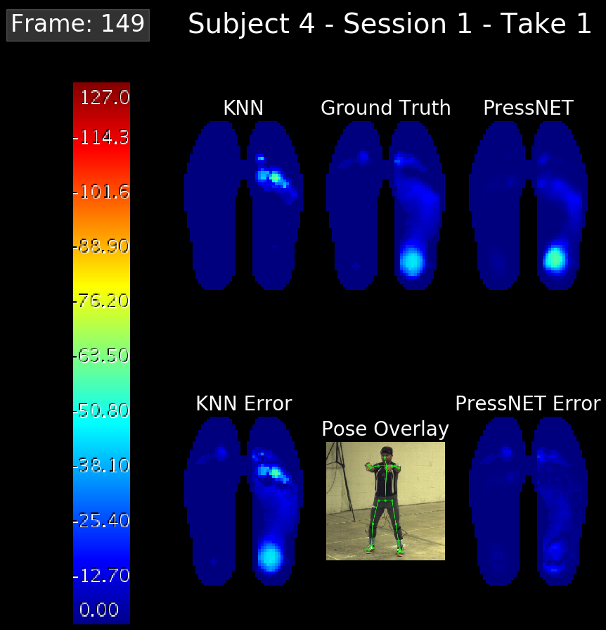
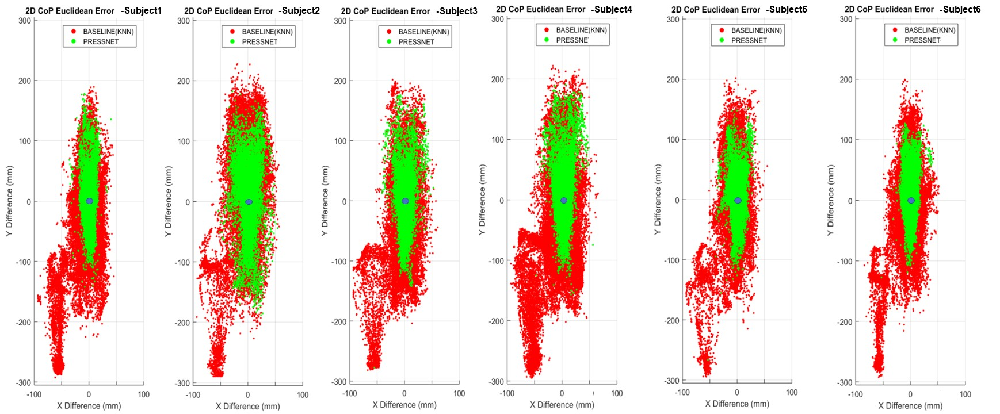
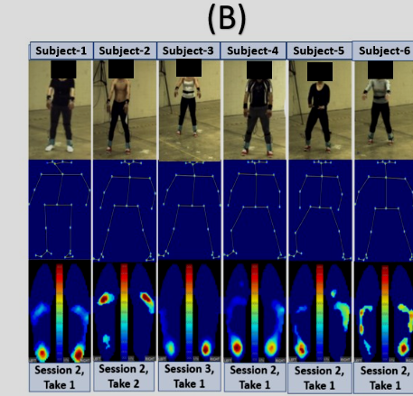

Successes and failures
Successes
PressNET beat the nearest-neighbor baseline on every measure the authors tracked. Average foot pressure error fell from 11.6 kPa to 5.16 kPa, and the gap was confirmed with a paired statistical test. That error is not far above the roughly 3 kPa of noise in the pressure sensors themselves, so much of the remaining gap may be measurement noise rather than a network mistake [1].

The center-of-pressure error told the same story: about 10 mm per foot for PressNET against about 60 mm for the baseline. PressNET's predictions also changed smoothly from one frame to the next, matching how a real person moves, while the baseline's predictions jumped between frames because it was free to pick a different match each time [1].

The follow-up study confirmed the same idea works on a larger, more varied dataset. It also added a simpler network built only from fully connected layers, which scored slightly better than the original PressNET design, and it produced the first estimates of base of support from predicted pressure [2].
Failures and limits
The clearest limit is that identical poses do not guarantee identical pressure. Two people striking the same pose can load their feet differently, so some prediction error can never be removed no matter how good the network is [1].

Accuracy also varied by person: the two subjects with the heaviest average foot pressure had the largest errors [1]. And the improvement over the baseline in the follow-up study was smaller than in the original, in part because that baseline was made stronger [2].
Both studies share the same underlying limitation: everything was recorded from six or a few dozen people doing one slow, controlled activity indoors. Neither paper tested fast or high-impact movement [1][2].
Next: challenges.